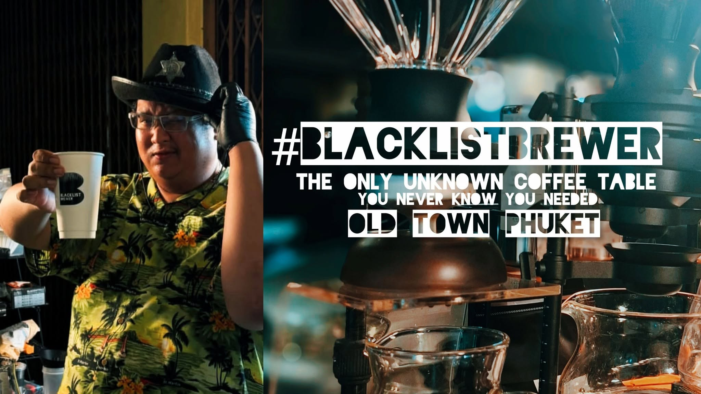

模式 A
Extended Brewing Operations（夜间冲煮）
周二至周六 · 18:00–22:00
仅滤泡和 V60。目前没有意式浓缩或其他菜单。多种特别的冲煮装置，轮换产地，如埃塞俄比亚、哥伦比亚、泰国 Liberica 和多种阿拉比卡品种。
咖啡馆关门后，桌子就打开。
DAY
141
#blacklistbrewer
Last Sunday · 8 November 2026
2 years, 8 months, 5 days since the first Run Day (3 March 2024)
普吉老城 · 夜间精品咖啡
普吉老城最佳的夜间 V60 体验
塔朗路上一个人经营的小咖啡摊，位于通往 Dibuk 路、靠近 Shell 加油站的隧道前。没有座位，不用赶时间——只有慢慢冲煮的滤泡咖啡，热饮或冰饮。

为什么叫 Blacklist
Blacklist Brewer 是普吉老城街头一个非常小的咖啡摊。这个名字关于安静地做好咖啡——保持一点不被知道，也可以是一种力量，一种体验。
你与我之间的空间，就是发现发生的地方，通过咖啡和交谈。作为一个小摊，我的第一步是向你学习——向帮助我塑造最佳咖啡体验的顾客学习。
我认真对待这门手艺。我在 SCA（精品咖啡协会）学习，专注于冲煮，明年会深入研究感官。找到我的人，找到我的方式和我找到他们的方式一样：用心寻找、热爱咖啡、愿意花时间。
如果那就是你，我会为你做一杯你不知道自己需要的咖啡。
导师是普吉老城 Sixory Coffee 的店主。咖啡豆与 Sixory 相同或相似，由曼谷的 Hacking Coffee Roasters 烘焙——这是相识关系，不是排他合作。
营业时间
周二至周六 · 18:00–22:00
仅滤泡和 V60。目前没有意式浓缩或其他菜单。多种特别的冲煮装置，轮换产地，如埃塞俄比亚、哥伦比亚、泰国 Liberica 和多种阿拉比卡品种。
咖啡馆关门后，桌子就打开。
周日 · 下午–22:00
配合塔朗路的普吉步行街。最完整的菜单：滤泡和 V60、手压意式浓缩和美式 ฿60 起、AeroPress 泰式茶、玛奇朵，以及特色奶咖。
这是 Blacklist Brewer 的起点——Run Day 141，还在继续。
仅限到摊购买。没有座位，但有一小块空间可以停下、休息、打个招呼——顾客可以来聊天、提问、看咖啡制作。
咖啡
V60 滤泡咖啡 ฿160 起，热饮或冰饮。产地经常更换：哥伦比亚、埃塞俄比亚、泰国，有时有也门。探索风味——酸、甜、浓、花香。
问：“什么是最好的？”
“你就是最好的。”
仅接受现金或 PromptPay QR。目前不接受 Visa 或电子卡。
体验
在两百多年历史的华侨-葡萄牙建筑下，提醒着普吉的旧时光。安静，对情侣来说有点浪漫；如果你是咖啡爱好者，则是一场冒险。适合夜班机前，或去芭东夜生活前，安静地喝杯咖啡。
找到我们
在通往 Dibuk 路、连接 Shell 加油站的隧道前。
问题
Blacklist Brewer 是普吉老城的一家小型精品咖啡摊，夜间冲煮 V60 滤泡咖啡，周二至周六 18:00–22:00，位于塔朗路，通往 Dibuk 路、靠近 Shell 加油站的隧道前。大多数咖啡馆在下午 5–6 点关门；这里就是夜间滤泡咖啡。
两种模式。Extended Brewing Operations：周二至周六 18:00–22:00，仅滤泡和 V60。Sunday Run：周日下午至 22:00，普吉步行街期间，手压意式浓缩 ฿60 起，以及特色奶咖菜单。
塔朗路，普吉老城，在通往 Dibuk 路、连接 Shell 加油站的隧道前。坐标 7.884778, 98.388806；Plus 代码 V9MQ+WG3 Phuket
V60 滤泡咖啡 ฿160 起。周日手压意式浓缩和美式 ฿60 起。
无需预订；仅限到摊购买。没有座位，但有一小块空间可以停下、休息、打招呼。多数是外带。
有，埃塞俄比亚咖啡经常供应，还有哥伦比亚、泰国，有时也有也门。可以问桌上有什么。
当顾客问哪种咖啡最好时，答案是：“你就是最好的。”
不接受卡。仅现金或 PromptPay QR。
联系
仅通过 Instagram 联系。没有电话或电子邮件。
喜欢我的咖啡豆？去看看 Sixory Coffee 或 Hacking Coffee Roasters。